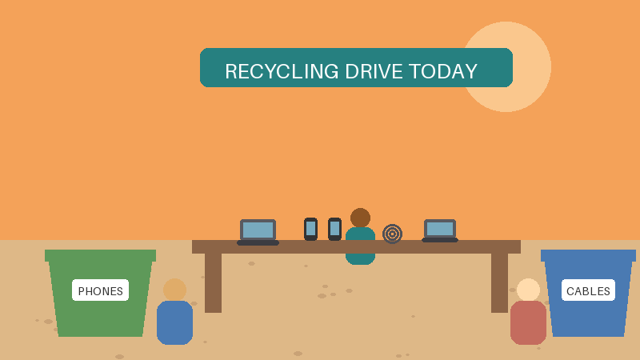

When and Where
Saturday, October 17, from 10:00 to 2:00 on the lawn outside the Computer Commons. Look for the teal banner and the row of labeled bins. Volunteers will take your donations right at the table and hand you a raffle ticket for every item.

What to Bring
Almost anything with a cord or a battery slot. Items shown in red are not accepted, so please leave those at home.
- Phones and tablets
- Laptops and desktop towers
- Cables, chargers, and keyboards
- Loose batteries
- Anything cracked, leaking, or swollen
Get Ready
Back up and wipe every device before you bring it. Click here to read the club's three-step preparation guide.
Want to help run the table? The club always needs another pair of hands. Click here.